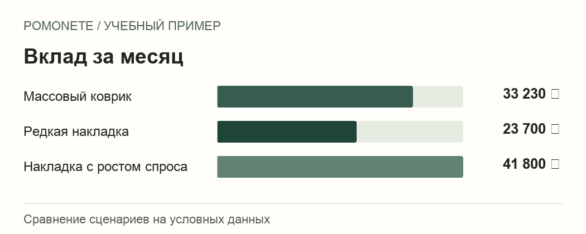

Редкий дорогой SKU и вклад на Яндекс Маркете
Как сравнить годный к масштабированию ассортимент по деньгам месяца и недельному спросу.
В аналитике селлера Яндекс Маркета дорогая накладка для мастерской выигрывает по рублям на заказ. Она продаётся редко, а новые фото и контроль партии требуют расходов. Сравним рассчитанный результат месяца и проверим, сколько недель должно хватать денег на воспроизводимый спрос.
Что считать по редкой позиции
Возьмите несколько обычных месяцев и проверьте, когда именно шли продажи. При большой закупке отдельного клиента не переносите этот объём без проверки на следующие месяцы. Разовую смету документируйте отдельно от регулярной обработки. Тогда сравнение масштабов будет понятным.
Чтобы пересобрать расчёт «Вклад за месяц» для своего магазина, перенесите в него исходные числа. В формуле A обозначает «доход на доставку, ₽», B обозначает «прямые затраты на доставку, ₽», C обозначает «доставки», D обозначает «разовые расходы, ₽». Удельную разницу умножают на количество. Последняя величина относится ко всему сценарию и учитывается один раз. Запишите рядом период и охват каждого среза. Для оценочных строк оставьте пояснения рядом с исходными значениями. При чтении сводки будет видно, какие из них пока подтверждены.
Вклад за месяц = (A − B) × C − D
| Условие | Доход на доставку, ₽ | Прямые затраты на доставку, ₽ | Доставки | Разовые расходы, ₽ | Вклад за месяц |
|---|---|---|---|---|---|
| Массовый коврик | 870 | 685 | 198 | 3 400 | 33 230 ₽ |
| Редкая накладка | 2 980 | 2 080 | 35 | 7 800 | 23 700 ₽ |
| Накладка с ростом спроса | 2 980 | 2 080 | 57 | 9 500 | 41 800 ₽ |

В сценарии «Массовый коврик» в формулу подставляем доход на доставку, ₽ = 870, прямые затраты на доставку, ₽ = 685, доставки = 198, разовые расходы, ₽ = 3 400. Получается 33 230 ₽. Продаж много и спрос распределён по неделям относительно ровно.
В сценарии «Редкая накладка» в формулу подставляем доход на доставку, ₽ = 2 980, прямые затраты на доставку, ₽ = 2 080, доставки = 35, разовые расходы, ₽ = 7 800. Получается 23 700 ₽. У накладки высокий вклад единицы, но на период приходится мало доставок.
В сценарии «Накладка с ростом спроса» в формулу подставляем доход на доставку, ₽ = 2 980, прямые затраты на доставку, ₽ = 2 080, доставки = 57, разовые расходы, ₽ = 9 500. Получается 41 800 ₽. Добавлен объём с дополнительной обработкой и отдельной проверкой срока пополнения.
Если «Массовый коврик» взять за исходную точку, «Редкая накладка» меняет показатель «вклад за месяц» на -9 530 ₽, а «Накладка с ростом спроса» на 8 570 ₽. Между двумя последними строками разница составляет 18 100 ₽ при вычитании второй из третьей. Смотрите, какой именно вход изменился между строками. Если менялись объём и условия одновременно, итог сравнения относится ко всему сочетанию.
В пересчёте на исходное значение разница второй строки составляет -28,68%. Здесь в знаменателе модуль первого результата, 33 230 ₽. Для показателя в процентах рядом сохраните и абсолютную разницу в процентных пунктах. Для малого исходного значения процентный скачок может оказаться крупным даже при скромном практическом эффекте. В рабочем отчёте оставьте оба исходных значения, чтобы при расширении выборки можно было пересчитать изменение.
Что меняется при единичном возврате
Один возврат редкого дорогого товара способен заметно изменить вклад, особенно при повреждении. Возьмите историю причин и оцените восстановимую стоимость. Укажите диапазон спроса, при котором хранение и дополнительные работы ещё покрываются. Общая ставка процента сама мало говорит о размере риска.
Соберите небольшую исходную выборку для «Редкая накладка», прежде чем переносить правило на весь магазин. Нужны экономика заказов и собственная закупочная ведомость. Среди записей найдите одну обычную и одну с изменённым значением «доход на доставку, ₽». Убедитесь, что после пересчёта на сопоставимое окно обе строки дают те же результаты, которые видит исполнитель. Для ручных поправок оставьте короткое основание.
Выгрузка маркетплейса даёт начисления по операциям. Собственную стоимость закупки, труд и расходники подставляют из учёта магазина с датой действия. Для решения по ассортименту разделите повторяющиеся переменные расходы, затраты на запуск и текущие фиксированные расходы команды. После изменения предложения обновляются и продажи соседних изделий. Счёт по одному товару имеет смысл дополнить итогом той группы, между вариантами которой может переключиться покупатель.
Что сильнее всего меняет результат
Здесь проверим устойчивость числа 23 700 ₽, полученного для «Редкая накладка». Для примера проверим «доход на доставку, ₽», «прямые затраты на доставку, ₽», «доставки», «разовые расходы, ₽». Меняем по одному параметру с шагом около 10% от его значения. Для небольших исходных чисел разница округляется до доступной целой единицы. Сдвиги ниже относятся к исходному сценарию, поэтому читатель может сопоставить их в одних единицах.
- «Доход на доставку, ₽» меняется с 2 980 на 3 278. При прежних остальных входах получается 34 130 ₽, сдвиг составляет 10 430 ₽.
- «Прямые затраты на доставку, ₽» меняется с 2 080 на 2 288. При прежних остальных входах получается 16 420 ₽, сдвиг составляет -7 280 ₽.
- «Доставки» меняется с 35 на 39. При прежних остальных входах получается 27 300 ₽, сдвиг составляет 3 600 ₽.
- «Разовые расходы, ₽» меняется с 7 800 на 8 580. При прежних остальных входах получается 22 920 ₽, сдвиг составляет -780 ₽.
Наибольшее отклонение в примере связано с параметром «доход на доставку, ₽» и составляет 10 430 ₽. Сохраните в расчёте, почему выбран именно этот сдвиг. После следующей выгрузки вместо учебных шагов попробуйте подставить разницу между наблюдавшимися периодами. Так проверите, насколько устойчива цифра при фактических колебаниях вашего магазина.
В отдельной таблице покажите время менеджера на товарную группу. Если дорогой SKU регулярно требует уточнения совместимости и больше обращений после покупки, оцените труд по фактическим случаям. Этот уточняющий расход пригодится до расширения набора моделей.
Что положить в план ассортимента
Назначьте уровень запаса и проверяйте его месяц с небольшим пополнением. Запишите минимальный объём доставок, который оправдывает сохранение товарной позиции. Если деньги и складовые места ограничены, рядом поставьте вклад той покупки, от которой придётся отказаться.
Поставьте рядом плановую и фактическую строки сделки с сохранённой себестоимостью. Проверку удобнее начинать с позиций, на которые приходится основной вклад, потом выделять случаи с нестандартной логистикой, возвратом или разовой скидкой. Если после смены состава продаж средняя величина улучшилась, восстановите исходные веса и оцените, сколько прироста действительно получилось на сопоставимых позициях.
В карточку наблюдения внесите исходный ориентир, факт после вмешательства и размер выборки. Для «вклад за месяц» оставьте единицу из таблицы и дату подстановки. В аналитике продавца Яндекс Маркета показатель должен отвечать на тот же вопрос при повторном сборе. Если на следующем цикле изменятся исходники, сохраняйте расхождение вплоть до строки, которую сможет пересчитать коллега.